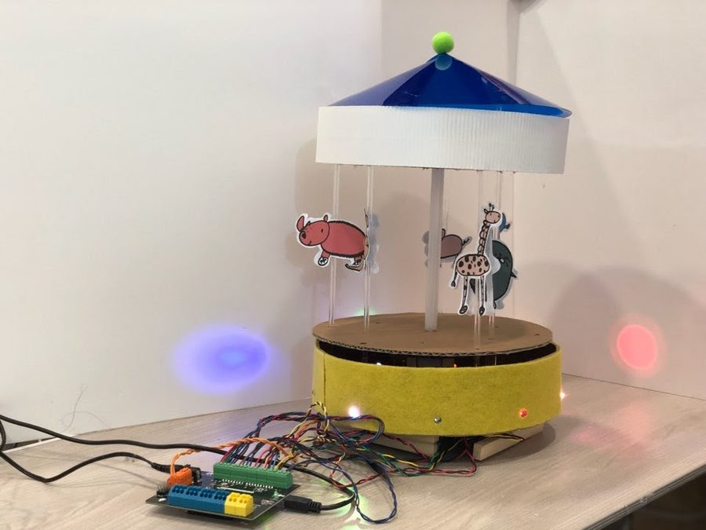
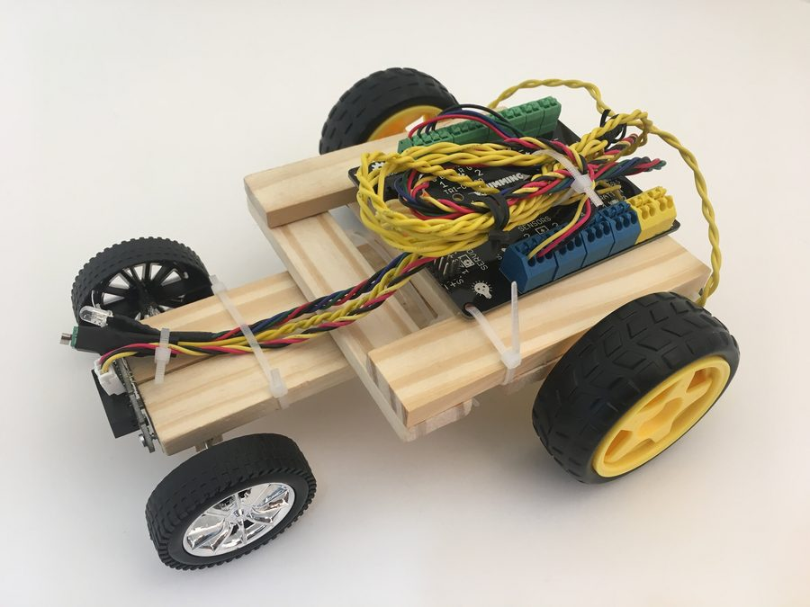
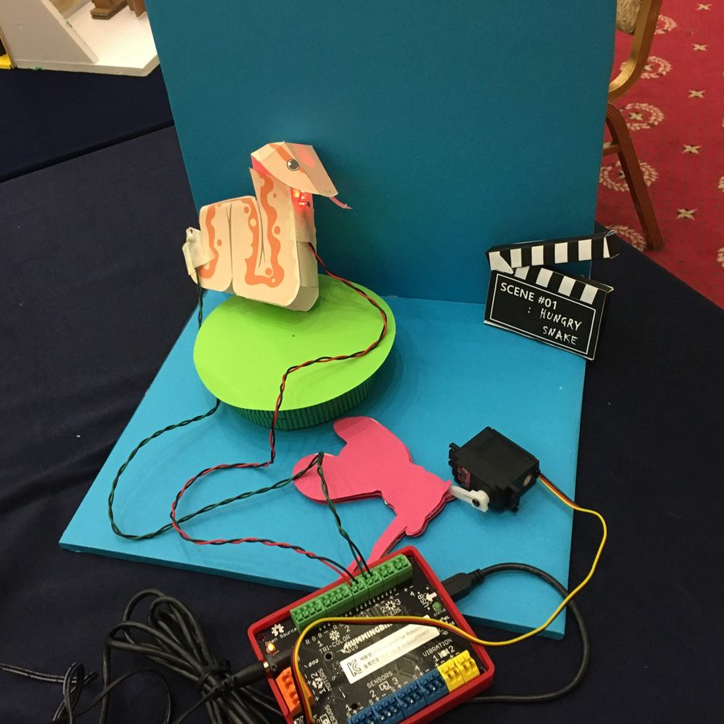

Educational robots and materials from my time teaching robotics, plus other build projects. (Placeholder cards below — replace with your own project photos and write-ups.)

A hand-built paper carousel wired to a Hummingbird controller — motor-driven spin, LED lighting, and a cast of paper animals. Taught kids the link between a circuit diagram and something that actually moves.

A wooden-chassis robot car built around the Hummingbird controller, photographed for a commercialization pitch — an early lesson in turning a classroom project into something that could actually ship.

A paper-craft animatronic snake with a servo-driven strike and LED eyes, built for a live exhibition demo — complete with its own clapperboard for "Scene #01: Hungry Snake."
Copy one of the .card.post-card blocks in blog-making.html, swap in your photo
(replace the .thumb placeholder with an <img> pointing to assets/img/making/), and update the title/description.